Equine Ambulatory Veterinary Services based in Idaho's Treasure Valley
(208) 462-0999We provide ambulatory equine veterinary and emergency services to Idaho's Treasure Valley based out of Eagle and serving Star, Middleton, Boise, Kuna, Nampa, Caldwell, and more!
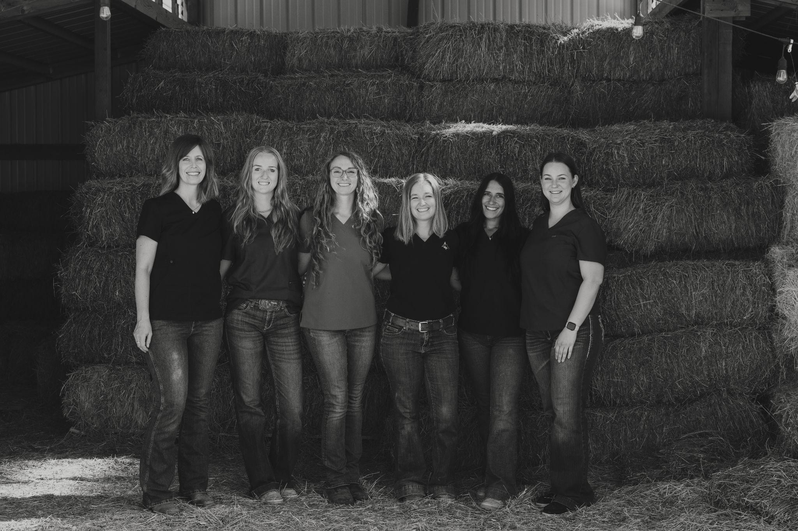
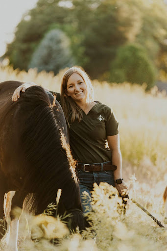
Veterinarian, Owner
Dr. Annie Roach is the founder of White Pine Equine Veterinary, established in 2024. A Nevada native, she discovered her passion for equine medicine early on while competing in show jumping across the West Coast. She completed her undergraduate degree at the University of California, Davis in 2013, then went on to earn a Master's in Assisted Reproductive Technologies from Colorado State University in 2016. See More
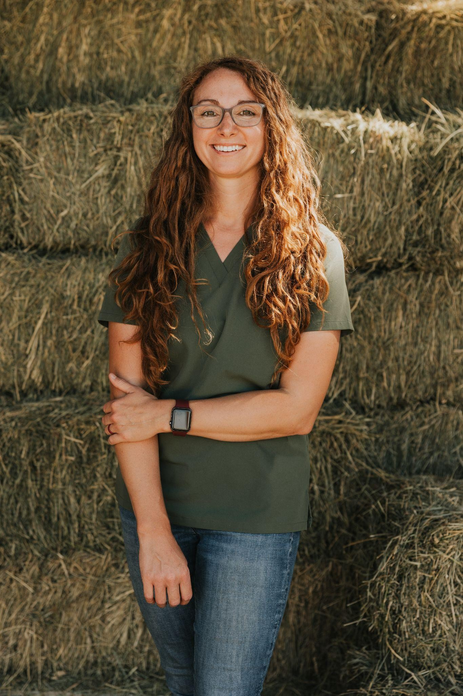
Veterinarian
Dr. Angela Nickel earned her Veterinariae Medicinae Doctoris degree from the University of Pennsylvania School of Veterinary Medicine. Growing up in Michigan, Angela was a horse-crazy girl who always knew she wanted to become a veterinarian. She pursued her undergraduate education while serving in the United States Marine Corps and later working as an equine veterinary assistant. See More
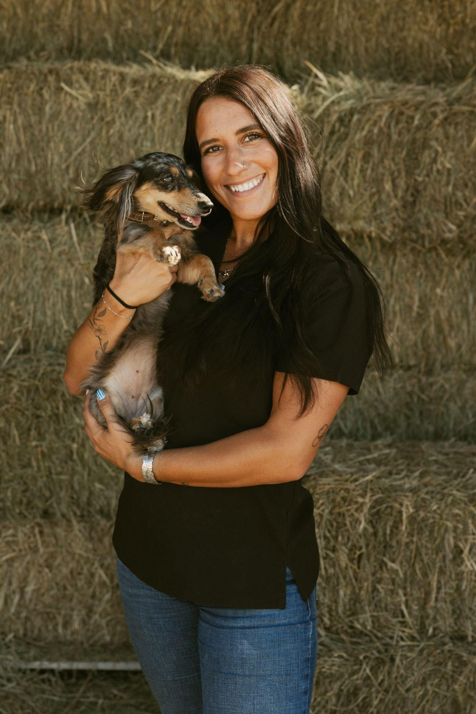
Veterinary Technician Assistant
Ashlee is a dedicated veterinary technician with a lifelong background in the western and rodeo world. She joined White Pine Equine in early 2025, bringing with her a strong passion for horses and a commitment to high-quality equine care. Ashlee has been rodeoing since the age of 4 and remains deeply connected to the western lifestyle. See More
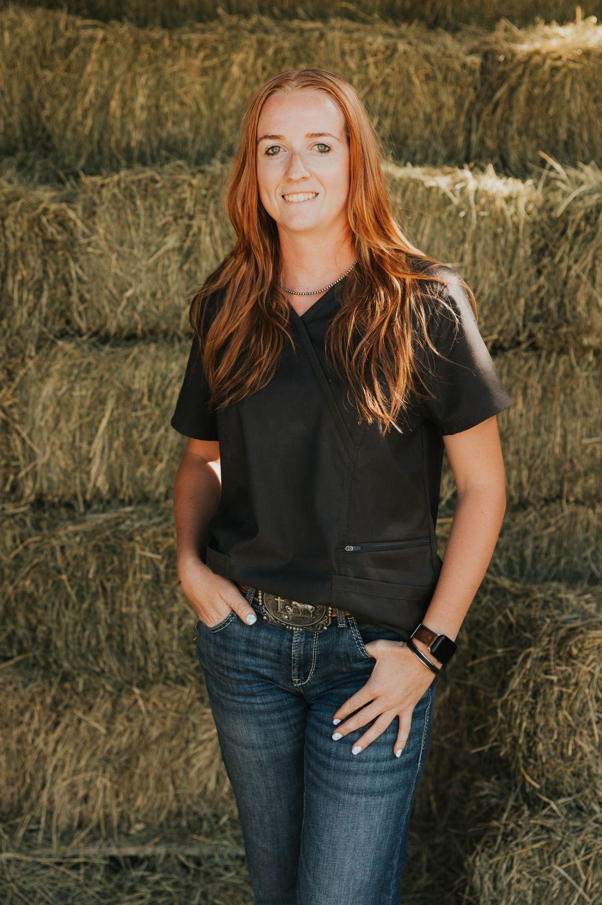
Veterinary Technician Assistant
Lyndsey joined the White Pine team in 2026 and you often will find her working alongside Dr. Angela. She has been working with horses for 9 years and has a huge passion for helping others learn and grow in the equine world. See More
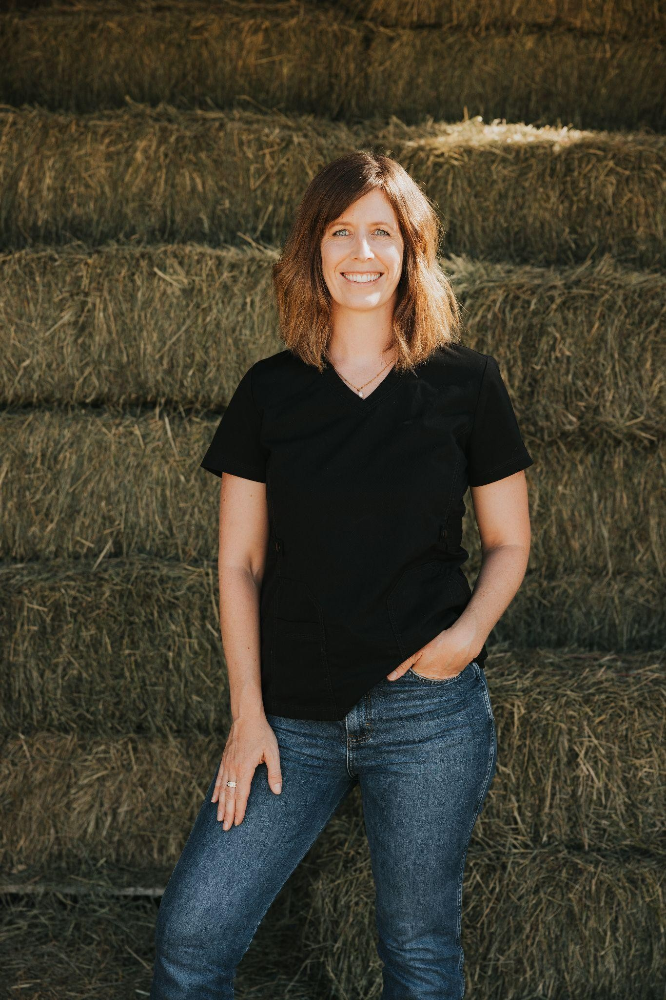
Veterinary Administrative Technician
Anna is an Idaho native with a lifelong love for horses and animals. Before joining White Pine Equine, she worked as an equine veterinary assistant and gained experience in mixed-animal practice, bringing a wealth of knowledge and a passion for caring for both horses and their people. See More
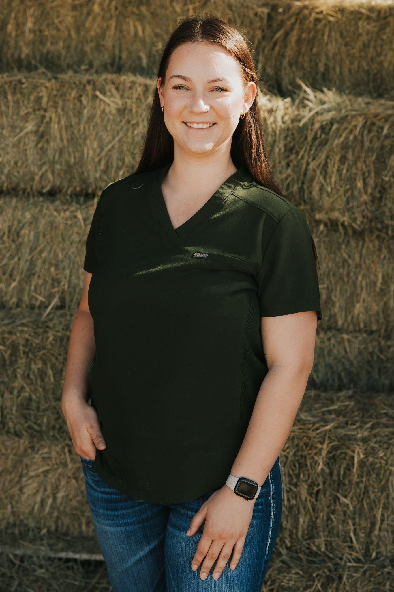
Veterinary Administrative Technician
You might recognize Olivia as the friendly voice that greets you when calling our office! Olivia has been working as a veterinary technician for the past six years and brings a wealth of experience and a genuine passion for helping both clients and their animals. See More
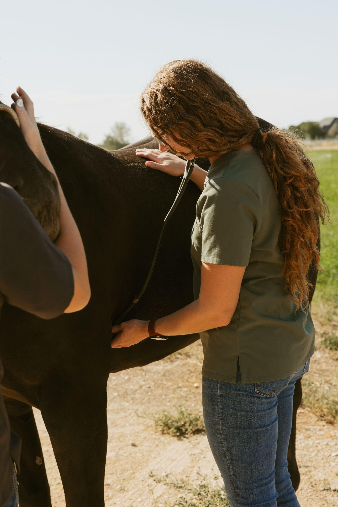
Our general medicine services form the foundation of lifelong health and wellness for horses of all ages, disciplines, and lifestyles. We provide individualized care plans that prioritize disease prevention, early detection, and proactive health management. See More
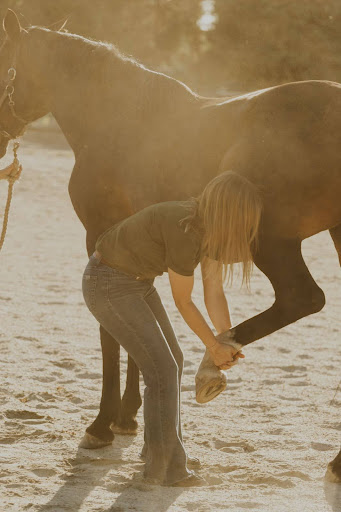
At White Pine Equine, we take a comprehensive approach to equine sports medicine and lameness care, recognizing that optimal performance and soundness require more than just treating pain—it means addressing the whole horse, inside and out. See More
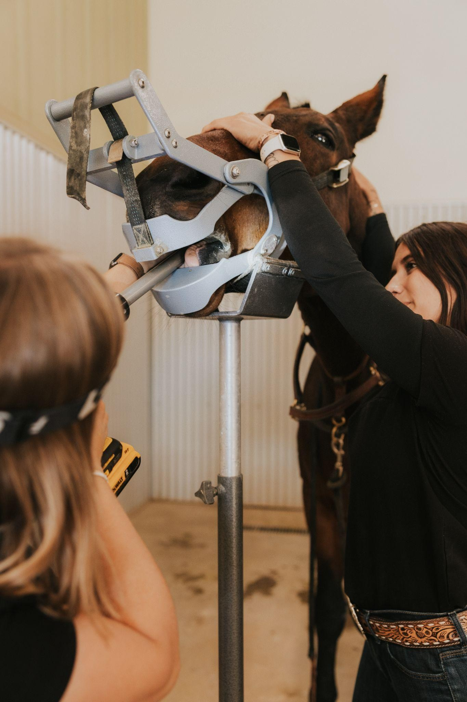
Equine dental care is more than just floating sharp points—it's a vital part of your horse's overall health, comfort, and performance. See More
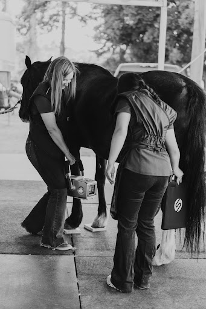
Accurate diagnosis is the cornerstone of effective veterinary care. At White Pine Equine, we offer a comprehensive range of diagnostic services to evaluate your horse's health from the inside out—whether you're addressing lameness, internal illness, metabolic concerns, or reproductive needs. See More
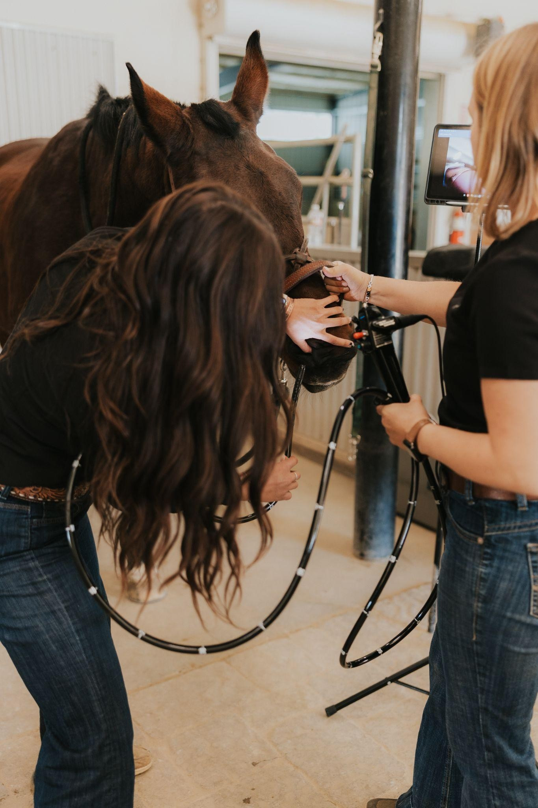
White Pine Equine offers mobile gastroscopy and upper airway endoscopy, bringing advanced diagnostic capabilities directly to your farm. See More
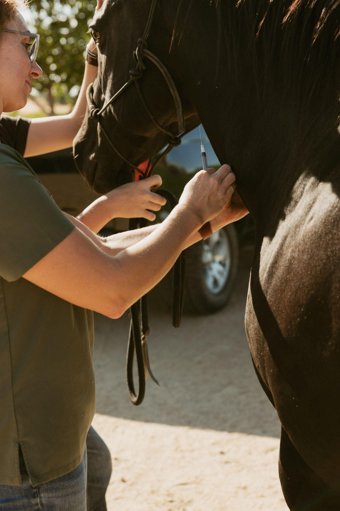
Our laboratory testing includes everything from routine panels to specialized screenings. We commonly run CBC and chemistry panels to assess organ function, hydration, and signs of infection or inflammation. See More
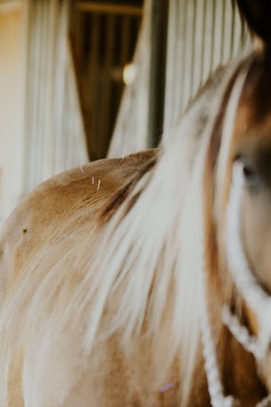
Equine acupuncture is an evidence-supported adjunct to traditional veterinary medicine that can enhance treatment outcomes for a range of conditions, particularly those involving musculoskeletal and neurological systems. See More
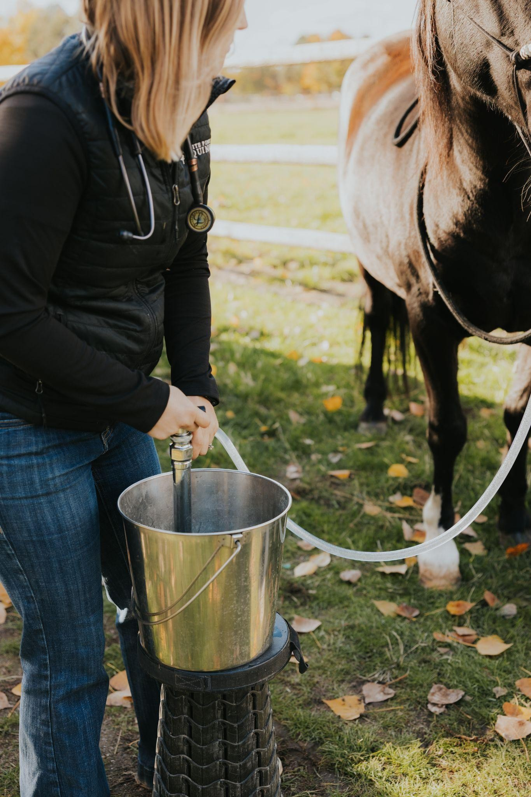
Emergencies don't wait, and neither do we. Whether it's colic, a serious laceration, choke, or a sudden injury, our veterinary team is prepared to respond quickly with the experience and equipment needed to manage critical situations in the field. See More
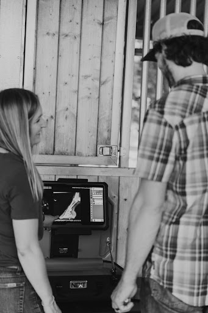
A pre-purchase exam is a vital step in ensuring the health and suitability of a prospective horse. See More
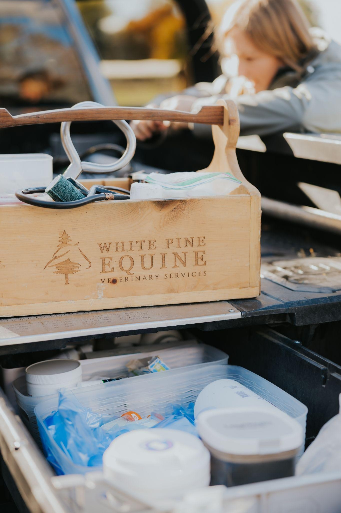
We offer a variety of elective surgical procedures performed safely and efficiently in the field or clinic. See More
To discuss any questions you may have or if you would like to make an appointment, call or email us today.
| Phone: | (208) 462-0999 |
| Email: | info@whitepineequinevet.com |